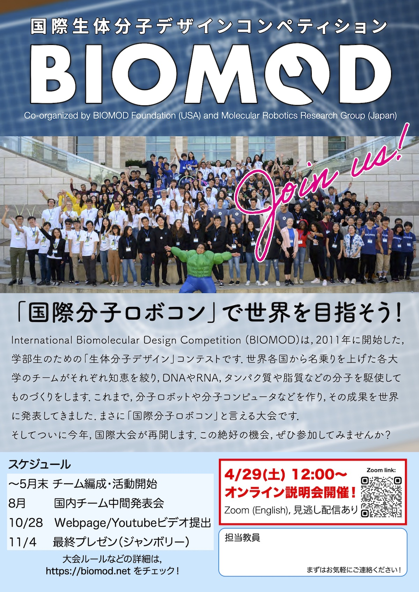
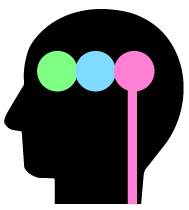
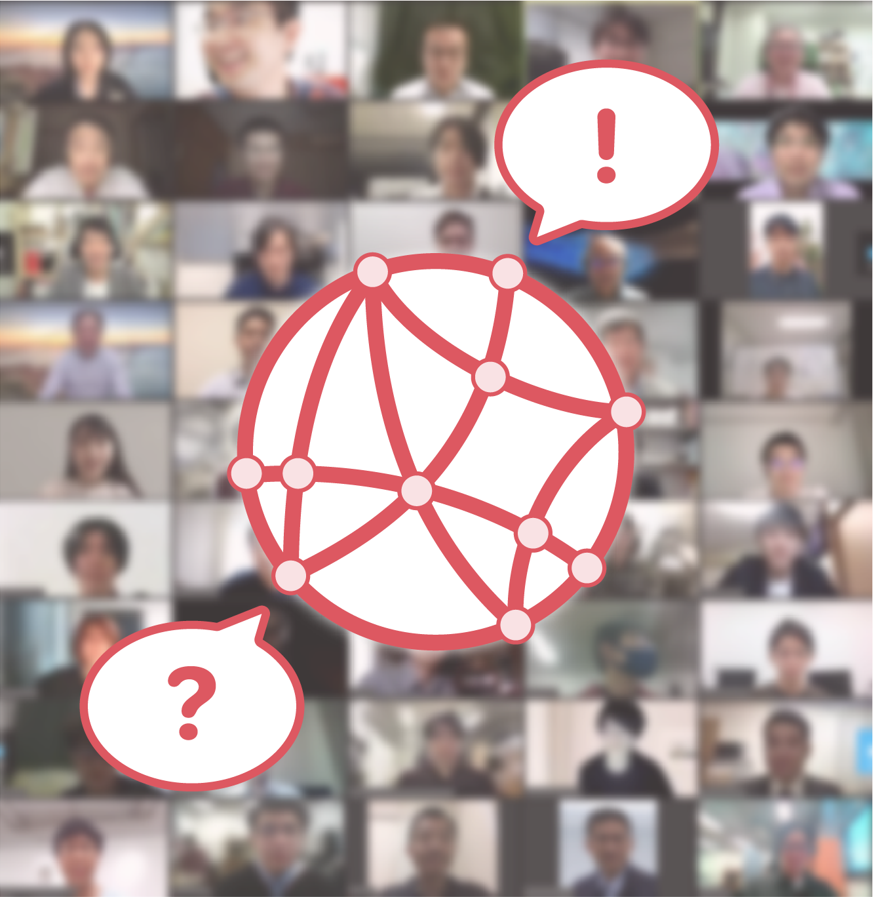
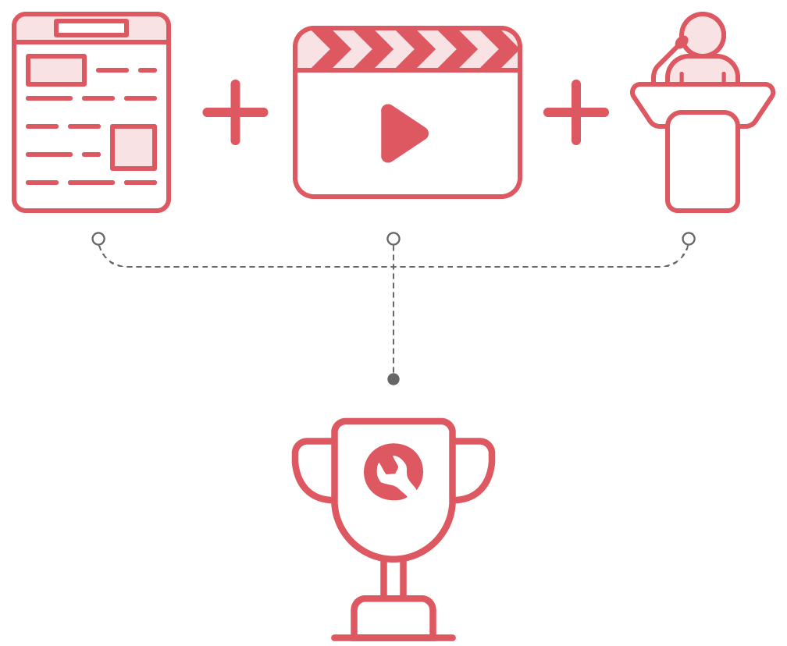

Updated 2023/02/28: We are pleased to annouce that we are officially resuming International BIOMOD this year (BIOMOD 2023)!
Please check biomod.net for details.
4/29より，チーム参加登録を開始・同日にオンライン説明会を開催いたします．日本国内からも複数大学が参加する予定です．地域によっては合同チームを編成できる可能性があります．
ご興味のある方は，お気軽に運営チームまでお問い合わせください．

下記は2022年の情報となります
分子ロボットを始めとした，生体分子からなるシステムを考え，作る「分子ロボコン」です．
| Organized by: Molecular Robotics Research Group The Society of Instrument and Control Engineers, Japan |
Sponsored by:  Molecular Cybernetics MEXT Grant-in-Aid for Transformative Research Areas (A) |

地域・大学の枠を越えた，混成チームを編成します．
「分子ロボ夏の学校」で学んだ内容の実践として，新しい分子ロボットを作ります．
今年は参加資格制限なし，実験も行います！
コロナ禍が始まって以来，中止となっている「分子ロボコン」BIOMOD世界大会の代わりとして，BIOMOD Japan Openは2020, 2021年とオンラインで国内開催してまいりました．
今年，2022年は実験系の一部復活も含め，ハイブリッド形式で実施します．また，分子ロボティクス夏の学校と連動することで，参加資格の制限をなくしました．分子ロボティクス・人工細胞工学・DNAナノテクノロジーなどに興味のある皆様，ぜひ奮ってご参加ください！
参加登録締切 6/24(金)
分子ロボ夏の学校に昨年参加し，今年はBIOMODのみに参加を希望する方は，実行委員会まで直接お問い合わせください．

今年のテーマは「脱炭素社会の実現」に貢献できる分子ロボットです．
各チームの成果は，BIOMODのルールに基づき，Wiki + YouTubeビデオ + プレゼン の合計得点(計100 points)で評価されます．昨年に引き続き，今年も最終成果は論文化を行う予定です．
プロジェクトを紹介するwebページです．英語で記述し，図を用いながら論理的でわかりやすく読みやすいwebページを作成することが求められます．全体の点数の半分がwikiの点数となっており，プロジェクトのアイディアや記述内容，図表の明瞭さなどが重視される評価基準となっています．
プロジェクトを紹介する3分以内の英語の動画です．制作した動画をYouTubeにアップロードし，ジャッジに閲覧され評価されます．3分という制約の中で，プロジェクトをわかりやすく端的に説明することが求められます．また，動画としてのクオリティやおもしろさといった点も，評価項目になっています．
スライドを用いた英語のプレゼンテーションです．プレゼンテーションのわかりやすさ，発表の質や質疑応答などが評価されます．また，一般的な学術発表とは異なり，クールに発表したり寸劇をしながらおもしろく発表したりと，各チームの工夫の見せ所である点はJamboreeならではの特徴です．
主催：計測自動制御学会システム情報部門調査研究会
「知能分子ロボティクス研究会」
後援：学術変革領域研究(A)
「分子サイバネティクス」
| 運営チーム（兼メンター） | 浜田省吾（東北大学・委員長） | |
|---|---|---|
| 佐藤佑介（九州工業大学・副委員長） | ||
| 平 順一（九州工業大学・コミュニケーション担当） | ||
| 川又生吹（東北大学・集計担当） | ||
| 前田和勲（九州工業大学・チーム編成担当） | ||
| メンター | 小野喜志雄（CBI研究機構先端領域ELSI研究所） | |
| 角五 彰（北海道大学） | ||
| 葛谷明紀（関西大学） | ||
| 清水 義宏（理化学研究所） | ||
| 庄司 観（長岡技術科学大学） | ||
| 鈴木勇輝（三重大学） | ||
| 瀧口金吾（名古屋大学） | ||
| 野村 M. 慎一郎（東北大学） | ||
| 堀 豊（慶應義塾大学） | ||
| 森本雄祐（九州工業大学） | ||
| ELSI/RRIワーキンググループ | 小宮 健（海洋研究開発機構） | |
| 標葉隆馬（大阪大学） | ||
| 見上公一（慶應義塾大学） | ||
| ジャッジ | Anthony Genot（東京大学） | |
| 稲葉央（鳥取大学） | ||
| オベル加藤 ナタナエル（御茶ノ水女子大学） | ||
| 川野竜司（東京農工大） | ||
| 車 兪澈（海洋研究開発機構） | ||
| 小長谷明彦（分子ロボット総合研究所） | ||
| 瀧ノ上正浩（東京工業大学） | ||
| 竹内一博（積水化学工業株式会社） | ||
| 多田隈尚史（上海科技大） | ||
| 中茎 隆（九州工業大学） | ||
| 萩谷昌己（東京大学） | ||
| 林 真人（法政大学） | ||
| 藤原 慶（慶應義塾大学） | ||
| 松浦和則（鳥取大学） | ||
| 松林英明（東北大学） | ||
| 宮元展義（福岡工業大学） | ||
| 村田 智（東北大学） | ||
| 実験拠点ホスト | Lab_Sapporo | 角五 彰（北海道大学） |
| Lab_Sendai | 浜田省吾（東北大学） | |
| Lab_Tokyo1 (Team B, C) | 豊田太郎（東京大学） | |
| Lab_Tokyo2 (Team B, C) | 矢島潤一郎（東京大学） | |
| Lab_Tokyo3 (Team D) | 瀧ノ上正浩（東京工業大学） | |
| Lab_Nagaoka | 庄司 観（長岡技術科学大学） | |
| Lab_Nagoya | 村山恵司（名古屋大学） | |
| Lab_Osaka | 葛谷明紀（関西大学） | |
| Lab_Kita-kyushu | 佐藤佑介（九州工業大学） | |
| 教育効果評価監修 | 吉川厚（東京工業大学） | |
| 山村雅幸（東京工業大学） | ||